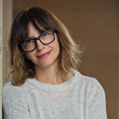
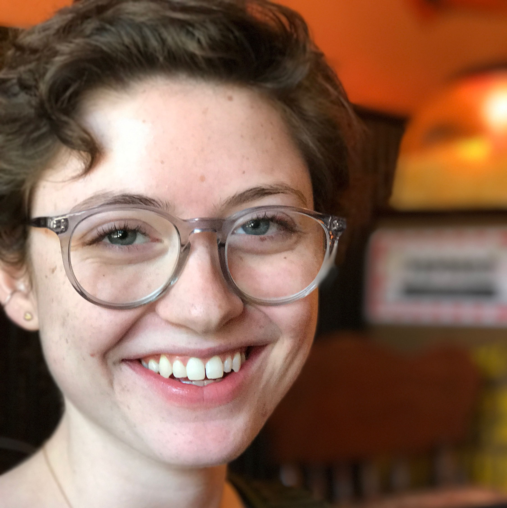
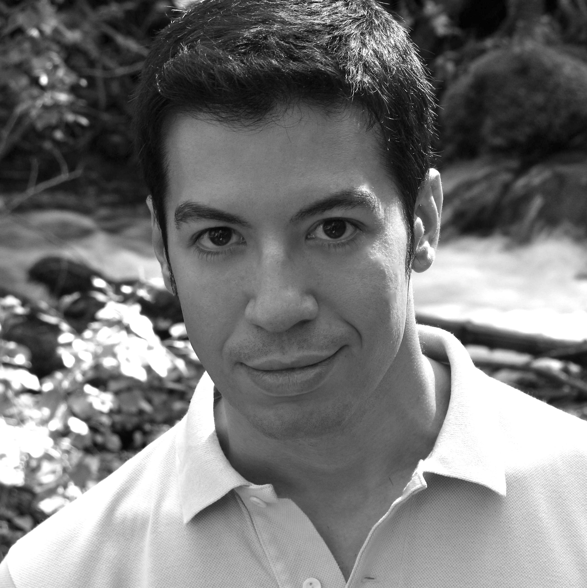
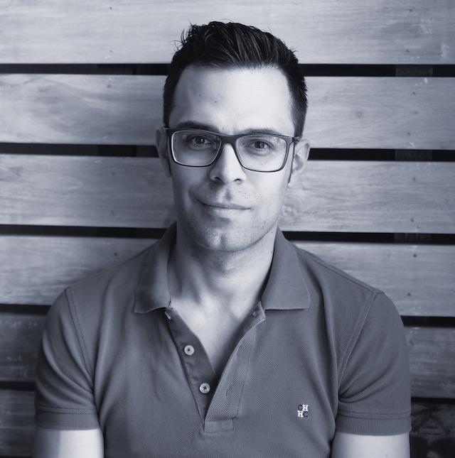
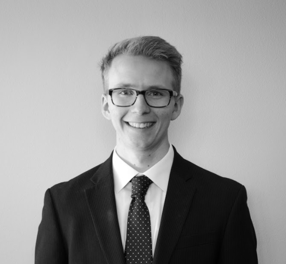

Meet The Team |
|
PAULINA ALBERTO
Faculty Collaborator |
 |

|
DOMINIQUE BOUAVICITH
Linguistics PhD Student |
|
ANDRIES COETZEE
Faculty Collaborator |

|
|  |
ELLA DEATON
Spanish Linguistics BA (2017) |
|
MALLORY FULLER
Linguistics & Spanish BA (2017) |
|  |
LORENZO GARCIA-AMAYA
Faculty Collaborator |
|
LIBBY GARNO
Spanish & International Studies BA (2016) |
 ` `
|
|  |
NICHOLAS HENRIKSEN
Faculty Collaborator & Principal Investigator |
|
KATE JENCKES
Faculty Collaborator |
` |
|
CLAIRE LAING
Spanish & Linguistics BA (2017) |
|
SEAN LANG
Spanish & Neuroscience BA (2019) |
 |

|
LILIANA DE LEON
Psychology & Spanish Linguistics BA (2017) |
|
MOIZ MAHMOOD
Computer Science & Linguistics BA (2020) |

|

|
JOSHUA SHAPERO
Anthropology PhD Student |
|
RYAN SZPIECH
Faculty Collaborator |

|

|
ISHAN VASHISHTA
Computer Science BS (2019) |